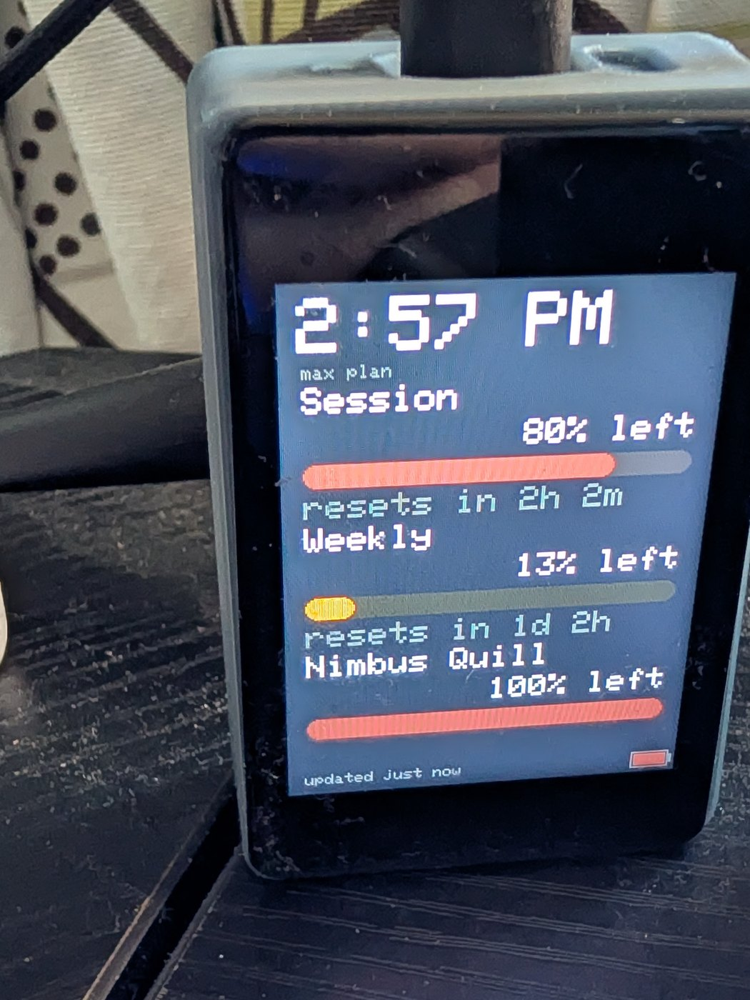

Yoyuよゆう
Japanese for room to spare, which is the point. Your Claude usage, on your desk. Let's get it running.
Pick your board
Yoyu runs on one small Waveshare dev board. No Raspberry Pi, no soldering. Two work. They flash differently, so choose first.
The Amazon links above are affiliate links. I earn a commission on qualifying purchases.
Pick one to continue. You can change it later.
Flashing the 2″ LCD
Flash the board
Plug the board into your computer with a data USB-C cable (a charge-only cable won't work), then:
Send yourself the link and open it on a computer running Chrome or Edge. That's the only step that needs one. Everything after it works from anywhere. Your board choice travels with the link.
https://daveeuson.github.io/Yoyu/
Pick the board's port when asked, then Install. Takes about a minute.
The flasher didn't load. Reload the page, and if it still doesn't appear, see the troubleshooting guide.
Board not showing up?
Hold the BOOT button, tap RESET, release BOOT, then click Connect again. If there's still no port, try a different USB-C cable; most are charge-only.
Put it on your Wi-Fi
This happens in the same window that just flashed it. When it finishes, that window offers “Connect to Wi-Fi.” Click it, pick your network, type the password once. It's sent to the board over the USB cable you already have plugged in. No hotspot, no app.
The board reboots and shows its address on screen. Write that address down. The next step uses it, and it's how you'll change settings later.
Closed that window, or it never offered Wi-Fi?
A flashed board with no network to join puts up its own Wi-Fi instead.
From a phone or a laptop, join the network named
Yoyu-Setup (password yoyusetup), open
http://192.168.4.1, and tap your home network from the
list. (That network only exists once step 2 is done; a board you
haven't flashed yet won't broadcast it.)
Choose your screens
The board has ten screens. Keep the ones you will use and the rest stay out of the rotation. Tap the board to go from one to the next. This board has no touch you can use, so they change on their own. Skip this and a new board shows all ten.
Pick a look
Each one is a palette and a layout: the screen you will stare at most is drawn a different way in every theme. You can change it any time on the board.
The one on its screen from step 3.
yoyu.local works too if you only have one board. That opens
the board's own settings page with your choices filled in; press
Save there to keep them. This page can't change the
board itself, because browsers keep websites away from devices on your
home network.
Feed it your usage
Run the little companion on the computer where you use Claude Code. It reads your existing login and sends usage to the board. No extra sign-in. Download it and open it; it runs straight away, and can install itself afterwards if you want it to start with your computer:
On Linux? There's a .deb and an AppImage too.
The plain Linux download above is a single binary you can run from anywhere. If you would rather it were a proper installed application, with a menu entry and an icon, there are two packaged builds:
Install the .deb with
sudo apt install ./yoyu-companion_amd64.deb. It gives you
yoyu-companion and yoyu-companion-cli on your
path. The AppImage needs no install at all: chmod +x it
and run it.
Both are built on Ubuntu 24.04, so they want a glibc of roughly that vintage. On something older, run the companion from source instead.
Windows says “protected your PC”? macOS won't open it?
Expected. The companion isn't code-signed yet, so both systems warn on first launch. On Windows, click More info → Run anyway. On macOS, right-click the download and choose Open instead of double-clicking. You only do this the first time.
Windows Defender sometimes goes further and quarantines the download
as “potentially unwanted software”. That's a false positive
unsigned builds attract. Every release publishes
SHA256SUMS.txt so you can check the file is the one the
build produced before you exclude it; the
troubleshooting
guide walks through it.
It finds the board on your network automatically. Within a minute or two the meters go live.
claude once on this computer to sign in
(check with claude /usage); the companion should then print
[LIVE], not [estimated].
It didn't find the board?
First, check they're on the same Wi-Fi. The board and this computer have to be on the same network, not a guest network, and not behind a VPN. That's the usual cause.
If they are and it still can't find it, the troubleshooting guide covers pointing the companion straight at the address from step 3. Otherwise just leave the companion running. It sets itself to start with your computer, so the meters stay fresh.
That's it

This is what you were aiming at. Photographed on the 2″ board; yours is the square one.
Leave it somewhere you'll glance at it. Amber under 30% left, red under 10%, and a window that has run out pulses until it resets.
If you go past your plan limits and start spending usage credits, it shows those too: the money instead of a percentage, and a phone alert the first time a period tips over. It only appears once credits are actually being spent, so most days you'll never see it.
On the board: tap to change screens, long-press to flip between “% left” and “% used,” swipe to change brightness, and lay it face down to sleep.
On this board: there is no touch you can use. The keys on its edge step through the screens: the left one goes back, BOOT goes forward. Hold PWR and the board switches off, so leave that one alone. Otherwise leave auto-rotate on and use the browser for the rest.
Everything else lives in a browser, at the address the
board shows on screen: /settings for screens, theme,
character and clock, /alerts for phone notifications, and
/update to take a new version over the air.
Pick a character. Five of them, and each one shows your headroom its own way: the kitsune's tails, the moon's phase, a candle burning down, a plant growing, a cat's ball of yarn. It's on the same settings page, and you can change it as often as you like.